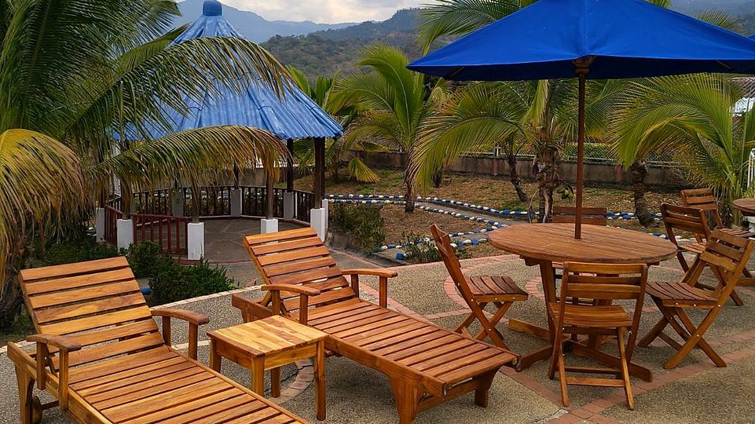

Hotel cerca de Mesitas del Colegio: dónde dormir y qué hacer
Mesitas del Colegio es tierra caliente a un paso de Tena. Aquí tienes qué ver en el municipio de El Colegio, dónde dormir cerca con piscina y cómo llegar al hotel.
Lectura de 6 minHotel Cabaleón
Si buscas hotel cerca de Mesitas del Colegio, Hotel Cabaleón queda a unos 30 minutos, en la vereda Escalante de Tena: un hotel campestre con piscinas, jacuzzi, sauna y desayuno incluido. Aquí te contamos qué ver en El Colegio y cómo combinarlo con una noche de descanso.
Dónde dormir cerca de Mesitas del Colegio: Hotel Cabaleón
Hotel Cabaleón es un hotel campestre en la vereda Escalante de Tena (Cundinamarca), a unos 30 minutos de Mesitas del Colegio. Tiene 15 habitaciones y una cabaña, con desayuno e impuestos incluidos, desde $250.000 la noche. En 9.000 m² de jardines frente a la Cordillera Oriental hay piscina para adultos (de 90 a 170 cm), piscina infantil (60 cm), jacuzzi, sauna, baño turco, gimnasio, cancha polideportiva, el Restaurante Mangolé y Cabalante Bar.
| Habitación | Capacidad | Tamaño | Desde, por noche |
|---|---|---|---|
| Suite Cabaleón (hay 3) | Hasta 4 personas | 40 m² | $280.000 |
| Cabaña Cabaleón (hay 1) | Hasta 2 personas | 32 m² | $280.000 |
| Habitación Familiar Cuádruple (hay 2) | Hasta 4 personas | 25 m² | $280.000 |
| Habitación Estándar Triple (hay 10) | Hasta 3 personas | 24 m² | $250.000 |
El valor cambia con la fecha, entre $250.000 y $450.000 por noche. Se admiten mascotas en habitaciones seleccionadas por $70.000 la noche. Todos los datos del hotel están en Hotel en Tena, Cundinamarca, y el valor exacto de tus fechas, en la reserva en línea.
Mesitas del Colegio en datos
| Dato | El Colegio, Cundinamarca |
|---|---|
| Nombre | Municipio de El Colegio; su cabecera es Mesitas del Colegio |
| Ubicación | Provincia del Tequendama, Cundinamarca |
| Altitud media | 990 metros sobre el nivel del mar |
| Clima | Cálido |
| Superficie | 117 km² |
| Población | 27.387 habitantes (2026) |
| Municipios vecinos | Tena (al norte), La Mesa, San Antonio del Tequendama, Anapoima, Viotá y Granada |
Qué hacer en Mesitas del Colegio
1. El parque principal y la Rueda Pelton
En el parque principal hay una Rueda Pelton instalada como monumento. Es un tipo de turbina que mueve el agua para generar electricidad, y recuerda el pasado del municipio con las plantas generadoras de energía. Junto al parque está la iglesia principal.
2. Caminos reales e historia panche
Durante siglos, el Camino Real y sus ramales fueron la principal vía de comunicación del municipio. Antes, el territorio fue de los panches, uno de los pueblos indígenas de la tierra caliente de Cundinamarca. Recorrer el pueblo a pie es la mejor forma de verlo.
3. El alumbrado navideño
En diciembre, Mesitas enciende un alumbrado navideño que Pulzo reseñó como un plan gratuito cerca de Bogotá. Las fechas cambian cada año: confírmalas con la alcaldía antes de ir. Es un buen plan para combinar con una noche en el hotel.
4. Clima cálido todo el año
A 990 metros, Mesitas es más cálido que la Sabana, con lluvias más frecuentes entre marzo y diciembre. Lleva ropa fresca, vestido de baño, bloqueador y una sombrilla. Aquí está la lista de qué llevar a clima cálido.
Plan de un día: Mesitas y Cabaleón
- Mañana en Mesitas: el parque principal, la Rueda Pelton y un café en el pueblo.
- Al mediodía, sube unos 30 minutos hasta Cabaleón y almuerza en el Restaurante Mangolé, de 12:30 a 3:00 p. m.
- Tarde de piscina, abierta hasta las 5:30 p. m., y jacuzzi en el turno de 4:30 a 5:00 p. m.
- Si te quedas, el check-in es desde las 3:00 p. m. y el desayuno del día siguiente está incluido.
Si vives en Mesitas: un plan a media hora
Para quien vive en Mesitas del Colegio, Cabaleón es una escapada a media hora. Puedes venir por el día con el Pasadía Premium, con almuerzo, piscina, jacuzzi, sauna y juegos, o celebrar un cumpleaños, un aniversario o una integración de empresa en el Gran Salón Mango Vista y los jardines. Cuéntanos por WhatsApp la fecha y cuántas personas serían.
Cómo llegar de Mesitas del Colegio a Hotel Cabaleón
El trayecto toma unos 30 minutos en carro. El último tramo antes de la llegada es una vía veredal, así que conviene hacerlo con luz de día la primera vez. Al confirmar tu reserva te enviamos el pin exacto por WhatsApp. Hay parqueadero gratuito en el hotel. Si vienes desde Bogotá, aquí está la ruta completa a Tena.
Otros planes en la zona
Desde el hotel, La Gran Vía queda a 25 minutos y La Mesa a 40. Mira también qué hacer en La Mesa, la guía de Anapoima y qué hacer en Tena. La Laguna de Pedro Palo es una reserva con acceso restringido: revisa cómo visitarla antes de ir.
Fuentes: ficha del municipio de El Colegio en Wikipedia (consultada el 6 de noviembre de 2026), Pulzo e información de Hotel Cabaleón.
Tu descanso comienza aquí
Elige fechas y habitaciones en nuestra página: ves tu factura al instante, con impuestos y desayuno incluidos, y confirmas con el anticipo del 50 % o el pago total. Directo con el hotel, sin intermediarios.
Preguntas frecuentes
¿Hay hoteles con piscina y jacuzzi cerca de Mesitas del Colegio?
Sí. Hotel Cabaleón, en la vereda Escalante de Tena, queda a unos 30 minutos de Mesitas del Colegio y tiene piscina para adultos, piscina infantil, jacuzzi, sauna y turco, con desayuno incluido.
¿A cuánto queda Hotel Cabaleón de Mesitas del Colegio?
A unos 30 minutos en carro. El último tramo es una vía veredal y el hotel envía el pin exacto al confirmar la reserva.
¿Qué hacer en Mesitas del Colegio?
Recorrer el parque principal y su Rueda Pelton, caminar por el pueblo y sus caminos reales y, en diciembre, ver el alumbrado navideño.
¿Cómo es el clima de Mesitas del Colegio?
Cálido: está a 990 metros de altura, con lluvias más frecuentes entre marzo y diciembre.
¿Qué municipio es Mesitas del Colegio?
Mesitas del Colegio es la cabecera del municipio de El Colegio, en la provincia del Tequendama, Cundinamarca. Por eso los dos nombres se usan para el mismo lugar.
¿Hay pasadía cerca de Mesitas del Colegio?
Sí. Hotel Cabaleón tiene el Pasadía Premium, un día sin alojamiento con almuerzo, piscina, jacuzzi, sauna y juegos. Es solo con reserva y el valor se confirma por WhatsApp.
¿Es Mesitas del Colegio lo mismo que La Mesa?
No. Son municipios distintos y vecinos de la provincia del Tequendama: Mesitas del Colegio es la cabecera de El Colegio, y La Mesa es la capital de la provincia. Hotel Cabaleón, en Tena, queda a unos 30 minutos de Mesitas y a 40 de La Mesa.
¿Cuánto se demora uno de Bogotá a Mesitas del Colegio?
Mesitas del Colegio está a unos 66 km de Bogotá por carretera. El tiempo depende del tráfico a la salida de la ciudad, así que conviene revisarlo en Waze o Google Maps.
Equipo de Hotel CabaleónComplejo turístico campestre en Tena, Cundinamarca. Publicado el .